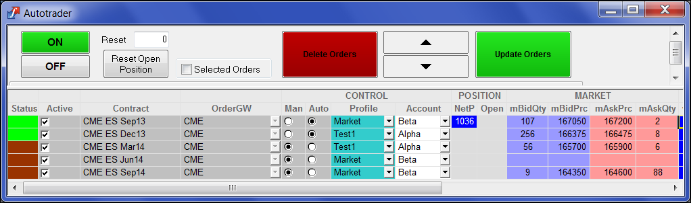

Autotrader for X_TRADER lets you automate order submission and management based on Excel links or a set of formulas using trading parameters, theoretical pricing and current market conditions.
Autotrader for X_TRADER is an automated order management tool that lets you execute complex strategies, quote markets, and scalp using a set of pre-defined formulas. You can provide formula values manually or use links from Excel.

The TT Autotrader widget provides similar market-making capabilities through a set of TT-provided pubic algos. TT Autotrader also lets you deploy, launch, and manage your own custom trading strategies implemented as ADL algos. Using TT Autotrader, you can configure multiple instances of these algos, submitting orders based on the algo logic. Like Autotrader for X_TRADER, you can also link your Excel data directly into TT Autotrader.
TT Autotrader lets you:
TT pubic algos incorporate the features of the Autotrader for X_Trader parameters box into a set of automated order entry strategies that allow users to quote a market based on a set of input parameters. These public algos let you quickly and easily launch a variety of market-making strategies, including:
In X_TRADER, users had the ability to create custom formulas directly in the Formula columns. In TT, users have two options to add custom formulas within the market making algorithm. Users looking for the most performant solution should include the custom formulas directly within the ADL logic itself. This option would have all calculations performed on the Algo server within the co-located datacenter. For those users that are not familiar with ADL, they can use RTD to pull market/order data into Excel, perform the calculation within Excel and then link the output back to Autotrader.